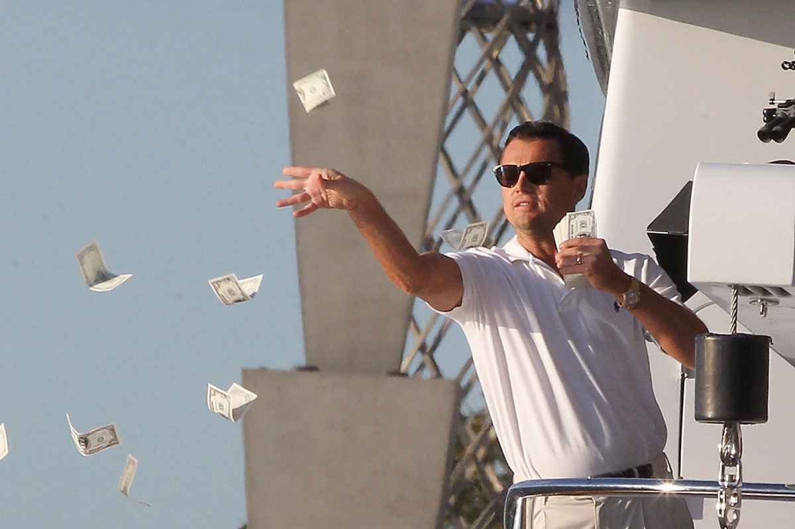

ONE STEP AT A TIME: MY FUTURE PLAN
By Mico Krenz B. Parungao
This blog is about my career path and the future I want to build for myself. Ever since I started learning about computers and technology, I knew that I wanted to finish college and earn a Bachelor’s degree in Computer Science. For me, education is the first step toward independence and stability. I see my college years not only as a time to study, but also as a time to prepare myself mentally and emotionally for the real world.
I want to work in the IT field after I graduate because I believe it will help me grow both professionally and personally. Working as a computer science graduate will allow me to gain real experience, improve my skills, and understand how the industry works. I know that the start will not be easy, but I am ready to learn from mistakes and challenges. Every task, big or small, will be part of my growth.
While working, I plan to be smart with my income. Instead of spending everything, I want to save and use my salary to start small businesses. For the next 5 to 8 years, my goal is to balance having a job while slowly building different sources of income. I understand that this means sacrifice, less rest, and more responsibility, but I believe that hard work now will lead to a better future later.

My Career and Life Goals
- Finish college and graduate with a Computer Science degree
- Get a stable job in the IT industry
- Gain experience and improve my technical skills
- Use my salary to fund small businesses
- Create passive income over time
- Eventually focus on business full-time
My long-term goal is to build a stable business that can support me even without a full-time job. Once my business becomes stable, that is when I plan to leave my job and focus on it completely. I dream of becoming successful in business and reaching a level where money is no longer a constant worry. I want to make smart decisions and build something that will last.
More than success, my biggest motivation is my family. I want to repay my parents for all their sacrifices and hard work. They supported me through my studies, and I want to give back by giving them a comfortable life. In the future, I also want to provide financial security for my own family and live without fear of instability.
My dream may be big, but I believe it is achievable with patience, discipline, and consistency. This plan reminds me why I need to stay focused and keep improving myself every day. I know the journey will be long, but I am willing to take it step by step and trust the process.
